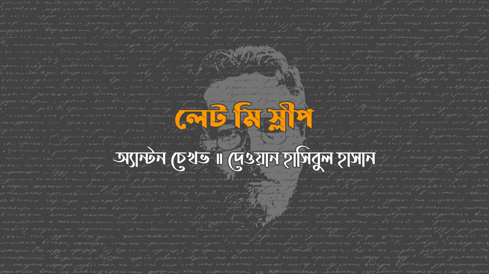

রাত। ভার্কা, ছোট্ট পরিচারিকা, বয়েস তের, শিশুটির দোলনা দোলাচ্ছে আর মৃদুস্বরে গুনগুন করছে–
“ঘুমাও আমার মানিক চান,
চানের জন্য বাঁধবো গান।”
মূর্তিটির সামনে রাখা একটি কুপি সবুজ আলো ছড়াচ্ছে। ঘরের একপ্রান্ত থেকে অপরপ্রান্তে দড়ি টানানো, ওতে ঝুলছে শিশুর কাপড়-চোপড় আর একটি কালো পাজামা। কুপির সবুজ আলো সিলিঙে গিয়ে ঠেকেছে, শিশুর কাপড় আর পাজামার ছায়া পড়েছে উনুনের উপর, পড়েছে দোলনায় আর ভার্কার শরীরে… শিখার কম্পনে থেকে থেকে সবুজ আলো-ছায়া হয়ে উঠছে জীবন্ত, করছে এদিক ওদিক ছুটোছুটি, মনে হচ্ছে যেন বাতাস বইছে। গুমোট পরিবেশ। বাঁধাকপি তরকারির ঘ্রাণ আসছে, আসছে জুতোর দোকানের ভ্যাপসা গন্ধ।
শিশুটি কাঁদছে। অনন্তকাল ধরে ফুঁপিয়ে চলেছে, কাঁদতে কাঁদতে ক্লান্ত। কিন্তু চেঁচিয়েই যাচ্ছে, ঈশ্বর জানে কখন থামবে। আর ভার্কার চোখে রাজ্যের ঘুম। ওর চোখগুলো আঠায় সেঁটা, মাথা আনত, ঘাড় যন্ত্রণাকাতর। ওর চোখের পাতা আর ঠোঁট অনড়, মুখ যেন শুকনো, কাঠ দিয়ে গড়া, মাথা যেন ছোট হয়ে হয়ে সুঁইয়ের মাথায় পরিণত হয়েছে।
“ঘুমাও আমার মানিক চান,
চানের জন্য বাঁধবো গান।”
উনুন থেকে একটি ঝিঁঝিঁপোকা ডাকছে। দরজা গলে পাশের ঘর থেকে আসছে মালিক, অনাড়ি আফানসির নাক ডাকার শব্দ… দোলনার সকাতরে ক্যাঁচক্যাঁচ, ভার্কার গুনগুন– সবে মিলে পরিণত হচ্ছে প্রাণ জুরানো সঙ্গীতে, শুনতে মধুর, যখন কেউ তা বিছানায় শুয়ে উপভোগ করবে। এখন এই সঙ্গীত শুধুই বিরক্তিকর আর কষ্টকর, কেননা এসব ওর ঘুমকে আরো উসকে দিচ্ছে, কিন্তু ঘুমানোর উপায় নেই। যদি ভার্কা – ঈশ্বর মাফ করো – ঘুমিয়ে যায়, ওর মালিক আর মালকিনের হাতে বেধড়ক মার খাবে।
কুপি কেঁপে উঠলো। সবুজ আলো-ছায়া হয়ে উঠলো জীবন্ত, ভর করলো ভার্কার স্থির, অর্ধ-নিমীলিত চোখের উপর, ভর করলো ধোঁয়াটে দৃষ্টির নিদ্রাকাতর মস্তিষ্কে। ও দেখলো কালো মেঘেরা একে অপরকে তাড়িয়ে বেড়াচ্ছে, চিৎকার করছে শিশুর মত। কিন্তু বাতাস বইতেই ওগুলো উধাও হলো আর ভার্কার চোখে ভেসে উঠলো এক কর্দমাক্ত সড়ক। সড়কজুড়ে সার বেঁধে গাড়ি চলছে, চলছে পেছনের পকেটে মানিব্যাগওয়ালা লোকেরা আর তাদের ছায়াগুলো সঙ্গ দিচ্ছে সামনে পেছনে হেলতে দুলতে। শুষ্ক কুয়াশা ভেদ করে ও দেখতে পাচ্ছে সড়কের দু’ধার ঘেষা অরণ্য। সহসাই, মানিব্যাগওয়ালা লোকগুলো কাঁদায় লেপ্টে থাকা সড়কে শুয়ে পড়লো। “এসব কেন?” ভার্কা জানতে চাইলো। “ঘুমাতে, ঘুমাতে!” তারা জবাব দিলো। আর তারা চলে গেলো মিষ্টি ঘুমে, ঘোর নিদ্রায়। ওদিকে দোয়েল আর কাকেরা টেলিগ্রাফের তারে বসে চিৎকার জুড়লো শিশুর মত, তাদের ঘুম ভাঙাতে।
“ঘুমাও আমার মানিক চান, চানের জন্য বাঁধবো গান,” ভার্কা বিড়বিড় করলো। এবার ও নিজেকে গুমোট, অন্ধকার কুঁড়েতে আবিষ্কার করলো।
ওর মৃত পিতা, ইয়েফিম স্টেপানোভ, মেঝেতে এপাশ থেকে ওপাশে গড়াগড়ি করছে। ও তাকে দেখতে পাচ্ছে না, তবে গোঙানি আর অসহ্য যন্ত্রণায় মেঝেতে তড়পানোর শব্দ কানে আসছে। “নাড়িভুড়ি বেরিয়ে আসছে,” সে বলতে চাইলো। কিন্তু যন্ত্রণা এতটাই তীব্র যে কোন শব্দ উচ্চারিত হলো না। শ্বাস চেপে শুধু ঢোল পেটানোর মত আওয়াজ বেরোলো–
“বু – বু – বু – বু…”
ওর মা, পেলাগিয়া, মালিকের বাড়িতে ছুটলো, জানাতে যে ইয়েফিম মরণাপন্ন। অনেকক্ষণ হয়েছে সে গিয়েছে, ফিরে আসার কথা। ভার্কা উনুনের পাশে জেগে রইলো, কানে আসছে ওর বাবার “বু – বু – বু।” আর তারপর ও শুনতে পেলো কুঁড়ের দিকে কেউ ছুটে আসছে। শহরের নবীন ডাক্তার, বড় এক বাড়িতে রোগী দেখার সময় তাকে ডেকে আনা হয়েছে। ডাক্তার ঘরের ভেতরে প্রবেশ করলো, অন্ধকারে তাকে দেখা যাচ্ছে না, তবে শোনা যাচ্ছে তার কাশি আর দরজা হাতড়ানো।
“বাতি জ্বালুন,” বললো সে।
“বু – বু – বু,” ইয়েফিমের জবাব।
পেলাগিয়া উনুনের দিকে ছুটে এসে ম্যাচ রাখার ভাঙা হাড়িটা খুঁজতে লাগলো। নিশব্দে মিনিটখানেক পার হলেো। ডাক্তার পকেট হাতড়ে ম্যাচ জ্বাললো।
“এক মিনিট, স্যার, এক মিনিট,” পেলাগিয়া বললো। কুঁড়ে থেকে ছুটে বের হলো সে, খানিক বাদে ফিরে এলো এক টুকরা মোম নিয়ে।
ইয়েফিমের গালে গোলাপি আভা, চোখ জ্বলজ্বলে, তার চাহনিতে অদ্ভুত প্রখরতা, মনে হচ্ছে তার দৃষ্টি যেন ডাক্তার আর কুঁড়ে ভেদ করো যাচ্ছে।
“এই যে, কি করছেন? কি ভাবছেন?” তার পাশে উবু হয়ে ডাক্তার বললো। “আহা, অনেক কষ্ট হচ্ছে?”
“জ্বি? মারা যাচ্ছি, সাহেব। আমার সময় ফুরিয়ে এসেছে... এ দুনিয়ায় আর থাকছি না।”
“বাজে কথা বলবেন না! আমরা আপনাকে সারিয়ে তুলবো!”
“যেমনটা বলেন, সাহেব। আপনাকে ধন্যবাদ। শুধু যদি আমরা বুঝতাম... মরণ এসে গেছে, ঐ যে।”
ডাক্তার মিনিট পনের ইয়েফিমকে নিয়ে পড়ে রইলো, তারপর উঠে বললো–
“আমি কিছু করতে পারছি না। আপনাকে অবশ্যই হাসপাতালে যেতে হবে। ওখানে ওরা আপনার চিকিৎসা করবে। এখনই চলে যান... আপনাকে যেতেই হবে! দেরি হলে, হাসপাতালের সবাই ঘুমিয়ে পড়বে, তবে সে ব্যপার না, আমি চিরকুট লিখে দিবো। শুনছেন?”
“মহানুভব, কিন্তু কিভাবে নিয়ে যাবো ওখানে?” পেলাগিয়া জিজ্ঞেস করলো। “আমাদের যে কোন ঘোড়া নেই।”
“কিছু মনে করবেন না। আমি আপনার মালিককে বলে দিবো, উনি ঘোড়া ধার দিবেন।”
ডাক্তার চলে গেলো, মোমবাতিও ফুরিয়ে গেলো, আবার ফিরে এলো সেই "বুু – বু – বু" শব্দ। আধঘন্টা পর কেউ কুঁড়ের দিকে এলো। ইয়েফিমকে হাসপাতালে নেওয়ার জন্য এক ঘোড়ার গাড়ি পাঠিয়েছে। সে প্রস্তুত হয়ে চললো...
কিন্তু এখন পরিষ্কার সকাল। পেলাগিয়া বাড়ি নেই; সে হাসপাতালে ইয়েফিমের খবর নিতে গিয়েছে। কোথাও এক শিশু কাঁদছে, আর ভার্কা শুনতে পেল কেউ ওর সুরে গাইছে–
“ঘুমাও আমার মানিক চান,
চানের জন্য বাঁধবো গান।”
পেলাগিয়া ফিরে এলো, বুকে ক্রস এঁকে কম্পিত কন্ঠে বললো–
“ওরা রাত পর্যন্ত উনাকে আটকে রেখেছিলো, কিন্তু ভোরে উনি আত্মা ঈশ্বরের নিকট সমর্পণ করেছেন... অনন্ত শান্তির স্বর্গরাজ্যে চলে গেছেন... ওরা বললো দেরিতে নেওয়া হয়েছে... আরো আগে যাওয়া উচিৎ ছিলো...”
ভার্কা রাস্তায় বেরিয়ে কান্না করলো, কিন্তু হঠাৎ কেউ ওর মাথার পেছনে এত জোরে আঘাত করলো যে ও বার্চ কাঠের উপর হুমড়ি খেয়ে পড়লো। চোখ মেলে তাকালো ও, ওর সামনে দাঁড়িয়ে আছে ওর মালিক, জুতোর কারিগর।
“তুই কোন কাজের, ধামড়া মাগী?” তিনি বললেন। “বাবু কাঁদছে, আর তুই ঘুমাচ্ছিস!”
সে ওর কানের পেছনে কষিয়ে চড় মারলো, আর ও মাথা ঝাঁকালো, দোলনা দোলালো, গুনগুন করে ওর গান গাইলো। সবুজ আলো আর শিশুর কাপড়, পাজামার ছায়া উপর-নিচ দুলে উঠলো, মাথা দোলালো ওর দিকে, আর অচিরেই আবার ওর মস্তিষ্কের দখল নিলো। আবার ও দেখতে পেল সেই কর্দমাক্ত সড়ক। সড়কে শুয়ে আছে পেছনের পকেটে মানিব্যাগওয়ালা ঘুমন্ত লোকরা আর তাদের ছায়া। তাদের দিকে তাকিয়ে ভার্কার তীব্র সাধ জাগলো ঘুমের; ও সানন্দে শুয়ে পড়তো, কিন্তু ওর মা ওর পাশে হাঁটছে, তাড়া আছে তার। ঘটনা বুঝতে ওরা একসঙ্গে শহরের দিকে ছুটছে।
“করুণা করুন, ঈশ্বরের ওয়াস্তে!” সামনে চলা লোকেদের কাছে ওর মা ভিক্ষা চাইলো। “আমাদের স্বর্গীয় কৃপা করুণ, মহানুভব ভদ্রলোকেরা!”
“বাবুকে এদিকে দে!” এক পরিচিত কণ্ঠস্বর বলে উঠলো। “বাবুকে এদিকে দে!” একই কণ্ঠস্বর পুনরাবৃত্তি করলো, এবার রূঢ় আর রাগত স্বরে। “তুই ঘুমাচ্ছিস, হতচ্ছাড়া মেয়ে?”
ভার্কা লাফিয়ে উঠলো, কি ব্যাপার বুঝতে এদিক ওদিক তাকালো- কোথাও সড়ক নেই, নেই পেলাগিয়া, নেই লোকারণ্য, শুধুই ওর মালকিন, শিশুটিকে খাওয়াতে এসেছে, আর দাঁড়িয়ে আছে ঘরের মাঝে। যখন এই স্থূল, চওড়া কাঁধের মহিলা শিশুকে শান্ত করে খাওয়াচ্ছিলো, ভার্কা দাঁড়িয়ে দেখছিলো তাকে আর অপেক্ষা করছিলো শেষ হবার। আর জানালার বাইরে আকাশ নীল হতে শুরু করলো, সবুজ আলো-ছায়া হতে থাকলো বিবর্ণ, ভোর হয়ে আসছে।
“ধর ওকে,” ওর মালকিন বললো। বুকের উপর শেমিজের বোতাম লাগাতে লাগাতে বললো, “ও শুধু কান্না করছে, কেউ নিশ্চয়ই জাদু করেছে।”
ভার্কা শিশুটিকে নিলো, দোলনায় রেখে আবার দোলানো শুরু করলো। সবুজ আলো-ছায়া ধীরে ধীরে অদৃশ্য হলো, আর এখন কারো সাধ্য নেই ওর চোখ আর মস্তিষ্কে ভর করার। কিন্তু ওর চোখে আগের মতই ঘুম। ভয়ানক ঘুম! ভার্কা দোলনার একপাশে মাথা রাখলো, ঘুম তাড়াতে গা ঝাড়া দিলো, তবুও ওর চোখ সেঁটে রইলো আঠায়, মাথা হয়ে রইলো ভারী।
“ভার্কা, চুলা জ্বালা!” দরজা গলে মালিকের কণ্ঠস্বর শুনতে পেল ও।
উঠে কাজ করার সময় হয়েছে। ভার্কা দোলনা ছেড়ে দৌড়ে গুদাম থেকে জ্বালানি কাঠ আনতে চললো। ও খুুশি। যখন কেউ হাঁটাচলা, দৌড়াদৌড়ি করে, তার চোখে ঘুম আসেনা যেমনটা আসে বসে থাকলে। ও কাঠ নিয়ে ফিরলো, উনুন জ্বাললো, আর টের পেল ওর কাঠের চেহারা আবার কোমল হচ্ছে, আর ওর ভাবনাচিন্তা পরিষ্কার হচ্ছে।
“ভার্কা, চা বসিয়ে দে!” চেঁচিয়ে বললো ওর মালকিন।
ভার্কা কাঠ ফাঁড়লো, কিন্তু ওতে আগুন দিয়ে চা বসাতেই নতুন আদেশ এলো–
“ভার্কা, মনিবের জুতা মুছে দে!”
ও মেঝেতে বসে জুতো মুছলো, আর ভাবলো এই জুতোর বিশাল ফুটোতে মাথা গলিয়ে একটু ঘুমিয়ে নিতে পারলে কতই না ভাল হতো... আর তারপর সহসাই জুতো বড় হয়ে গেলো, গিলে নিলো ওকে, পুরু হয়ে গেল ঘর। ভার্কার হাত থেকে জুতোর ব্রাশ পড়ে গেল, কিন্ত ও মাথা ঝাঁকালো, চোখ বড় করে তাকালো, সবকিছু দেখার চেষ্টা করলো যাতে ওগুলো যেন বড় হয়ে চোখের সামনে নড়তে না পারে।
“ভার্কা, সিঁড়ি ধুয়ে ফেল; লজ্জাই লাগে যখন খদ্দেররা ওরকম দেখে!”
ভার্কা সিঁড়ি পরিষ্কার করলো, ঘর ঝাড়ু দিয়ে মুছলো, তারপর আরেকবার উনুন জ্বালিয়ে ছুটলো দোকানে। অনেক কাজ পড়ে আছে- এক মুহূর্ত জিরোনোর সময় নেই।
কিন্তু কোন কিছুই রান্নাঘরে একনাগাড়ে দাঁড়িয়ে আলুর খোঁসা ছাড়ানোর মত শক্ত না। ওর মাথা টেবিলে ঝুঁকে পড়ে, চোখের সামনে আলু নাচানাচি করে, হাত থেকে ছুরি পিছলে পড়ে। তখন ওর মোটা, রাগী মালকিন হাতা গুটিয়ে এত উচ্চস্বরে কথা বলতে থাকে যে ভার্কার কানে বাজতে থাকে। এও কষ্টকর– রাতের খাবারের অপেক্ষা, ধোয়া-মোছা, সেলাই করা। মাঝে মাঝে ইচ্ছে হয় সব বাদ দিয়ে মেঝেতে শুয়ে পড়তে, ঘুমিয়ে যেতে।
দিন ফুরোলো। ও ওর কপাল স্পর্শ করলো, মনে হচ্চে যেন কাঠের, একটু হাসলো, যদিও জানেনা কেন। আবছা সন্ধ্যা ওর আধখোলা চোখে চুমু দিলো, আর দিল শীঘ্রই গভীর নিদ্রার প্রতিশ্রুতি। সন্ধ্যায় অতিথিরা এলো।
“ভার্কা, চা বসিয়ে দে!” মালকিন চেঁচিয়ে বললো। চায়ের আসর ছোট। অতিথিরা তাদের ইচ্ছেমত চা পানের আগে ওর পাঁচবার গরম করে দিতে হলো। চা শেষে পুরো এক ঘন্টা ভার্কা একই স্থানে দাঁড়িয়ে রইলো, তাকিয়ে রইলো অতিথিদের দিকে, আদেশের অপেক্ষায়।
“ভার্কা, দৌড়ে গিয়ে তিন বোতল বিয়ার কিনে নিয়ে আয়!”
ও ছোটা শুরু করলো, ঘুম তাড়াতে যত দ্রুত পারে দৌড়াতে থাকলো।
“ভার্কা, একটু ভদকা দিয়ে যা! ভার্কা, বোতলের ছিপি কোথায়? হারিং পরিষ্কার কর!”
তবে এখন, অবশেষে, অতিথিরা চলে গেছে। আলো নিভিয়ে মালিক আর মালকিন বিছানায় চলে গেছে।
“ভার্কা, বাচ্চার দোলনা দোলা!” ও শেষ আদেশ শুনতে পেল।
উনুন থেকে আবার ঝিঁঝি ডাকছে। সবুজ আলো আবার সিলিঙে ঠেকেছে, আবার শিশুর কাপড় আর পাজামার ছায়া ভার্কাকে চোখ টিপে, ওর মস্তিষ্ক মেঘাচ্ছন্ন করে পড়েছে ওর অর্ধ-নিমীলিত চোখের উপর।
“ঘুমাও আমার মানিক চান,” ভার্কা বিড়বিড় করলো, “চানের জন্য বাঁধবো গান।”
আর শিশুটি চিৎকার করছে, ক্লান্ত চিৎকারে। ভার্কা আবার দেখতে পেল সেই কর্দমাক্ত সড়ক, মানিব্যাগওয়ালা লোকদের, ওর মা পেলাগিয়াকে, ওর বাবা ইয়েফিমকে। ও সব বুঝতে পারছে, সবাইকে চিনতে পারছেও। কিন্তু ওর নির্ঘুম চোখ দিয়ে বুঝতে পারছে না সে শক্তিকে যে বেঁধে রেখেছে ওকে, ওর হাত-পা, পিষে ফেলছে ওকে, আটকে দিচ্ছে ওর বেঁচে থাকা। ও চারপাশে তাকালো, খুঁজলো সেই শক্তিকে যার থেকে ও নিস্তার পেতে পারে, কিন্তু খুঁজে পেল না। অবশেষে, ক্লান্তির শিখরে, ও সর্বোচ্চ চেষ্টা করলো, চোখ পিটপিট করে তাকালো কম্পিত সবুজ আলোতে, আর শুনলো চিৎকার, পেয়ে গেল সেই শত্রুকে যে ওকে বাঁচতে দিচ্ছে না।
শিশুটিই সেই শত্রু।
ও হাসলো। ওর কাছে আজব লাগলো যে এই সামান্য ব্যাপার ও ধরতে পারে নি। হাসলো সবুজ আলো- ছায়া, আর ঝিঁঝিঁ পোকারাও, বিস্ময়ে। বিভ্রম ভর করলো ভার্কার উপর। টুল থেকে উঠে দাঁড়ালো ও। বিস্তৃত হাসিমুখ আর নিষ্পলক চোখে ঘর ধরে এগোলো ও। ওর হাত আর পা বেঁধে রাখা শিশুটি থেকে নিস্তার পাবে ভেবেই ওর খুশি আর সুড়সুড়ি লাগলো... হত্যা করো শিশুটিকে, আর তারপর ঘুম, ঘুম, ঘুম...
হাসতে হাসতে, চোখ পিটপিট করে, সবুজ আলো পানে আঙুল মটকে ভার্কা শিশুটির দিকে এগিয়ে গেল, আর তারপর উবু হলো শিশুটির উপর। শিশুটির শ্বাসরোধ করে ও জলদি মেঝেতে শুয়ে পড়লো, পরমানন্দে হেসে উঠলো, এখন ঘুমাতে পারবে। এক মুহূর্তে গভীর নিদ্রায় তলিয়ে গেল ও, ঠিক যেন মৃতমানুষ।